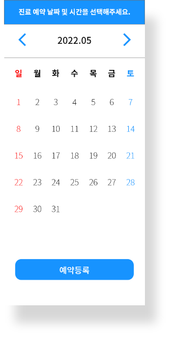

MAIN_UI

01
First Utopia
UI/UX
02
Second Utopia
WEB

OBSERVATION
코로나 19로 큰 피해를 최근 사회. 면역력 및 신체건강의 중요성이 재조명되고 있습니다. 신체의
건강 상태 및 면역력에 따라, 백신접종의 효과도 개인마다 격차가 큽니다. 대다수의 인원은 해당
백신에 대한 정확한 정보는 잘 모른채 무작정 접종하기 쉽상입니다.
소아예방접종에 대해서 알고싶습니다.
예방접종에 대해 잘 모르고.. 알 수 있는 곳이 별로 없어서 시기는 언제인지,
부작용은 뭔지 어떠한 경우에 맞추면 안되는지 모르겠어서 어렵네요.
2022.02.26
부모님이 연세가 많으신데
연세가 많으셔서 각종 병환이 걱정되는데 노인
분들을 위한 예방접종은 따로 없을까요?
2022.04.18
A형간염 백신 괜찮을까요?
제가 간수술을 크게 한적이 있는데, A형 간염
예방접종을 맞게 되면 문제가 생길까 걱정돼요.
2022.01.21
소아, 청소년 백신 안맞으면 40%는 코로나
코로나 사태가 지속되는 요즘 소아 및 청소년들의 감염률이 증가하고 있습니
다. 이는 부작용이 걱정되는 미접종자들에게 자주 나타나는데, 백신의 정보가
많이 부족하다는 의견이 지속해서 나오고 있습니다.
2022.08.02
백신을 맞았는데, 고열이 일어납니다.
엊그제, 대상포진 예방접종을 했는데 몸에서 심하게 열이 나고 구토도 2시간 간격
으로 합니다. 정상적인 백신 부작용인가요?
2022.02.26
독감 백신 부작용 심하나요?
독감백신도 코로나백신처럼 부작용 심한가요?
회사가야하는데 걱정돼서요.
2022.10.11
내가 무슨 예방접종을 맞았는지
한눈에 편히 볼 수 있다면?
코로나 19로 백신사업이 왕성하게 일어나고 있습니다. 저는 여기서 하나의 아이디어가 떠올랐는
데요. 본인에게 필요한 백신들의 종류, 접종일, 유효기간 등이 나타나있다면 어떨까 하고 생각을
하게 되었습니다.
KEYWORD
[ 다양한 예방접종을 어디서, 어떻게, 유효기간이 정리되어 편하게 보여주는 어플 ]
간단한 사용법 및 높은 가독성, 직관적인
디자인에 중점을 두고 작업을 하였습니다.
IDENTITY
최근 우리는 세계적으로 퍼졌던 감염병에 많은 아픔을 겪었습니다. 이런 경험
을 바탕으로 생긴 MYDOC 은 본인에게 필요한 다양한 예방접종 정보 및 접종
장소 선정을 할 수 있게 시스템과 디자인이 진행되었습니다.
마이닥
깔끔함에서 나오는 편안함.
앱의 취지가 ‘본인 맞춤 예방접종 서비스’를 보고
자신만의 맞춤 의사, 건강관리사가 떠올랐습니다.
누가봐도 한눈에 의료어플로 알아 볼 수 있도록
십자가를 넣고, 본인의 맞춤 의사를 표현하기 위해
의사들의 진찰경을 디자인해서 첨부하였습니다.
Color
차분함으로 칠해진.
남녀노소 가리지 않고 쉽고 친근하게 접근 할 수 있도록 직관적이고 눈에
피로를 낮춰주는 컬러로 진행을 하였습니다. 파란색 계열의 색상을 조합해
보다 차분하게 유저한테 보여집니다.

Typography
가독성을 중심으로.
고딕 서체를 사용하여, 한눈에 들어오는 디자인을 중심으로 기획했습니다.
세계적으로 가장 대중적인 Noto Sans 시리즈와 한국에서 큰 인기를 끌은
옴니고딕을 기반으로 디자인됩니다.
DESIGN TO
MY DOC
멀티프로필을 이용하여 본인만이
아닌 다른 사람의 추천 예방접종 정보
또한 알 수 있습니다.
CONTENTS_UI
멀티프로필을 이용하여 본인만이
아닌 다른 사람의 추천 예방접종
정보 또한 알 수 있습니다.
WORK_THROUGH
워크스루는 사용자에게 앱 시스템 소개 및
사용 방법을 지시합니다.


SUB_UI
위치기반 서비스를 이용하여 본인 주변의 예방접종 가능한 병원과
해당 병원의 백신 여부 및 운영시간, 예약 시스템을 이용 할 수 있습니다.
APPOINTMENT_SERVICE
본인의 목적에 맞는 병원을 찾았다면 즉시 예약을 서비스를
이용하여 진료 날짜 및 시간을 확인 및 방문가능합니다.